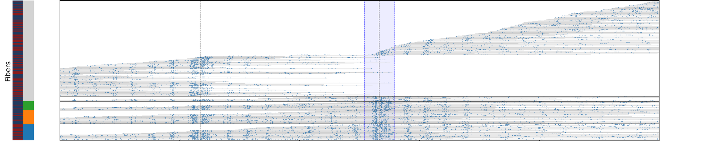
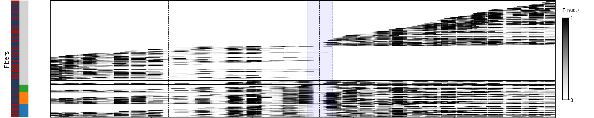
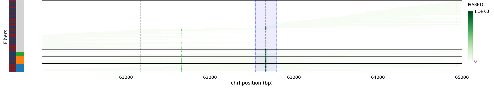
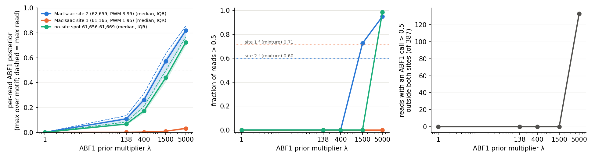
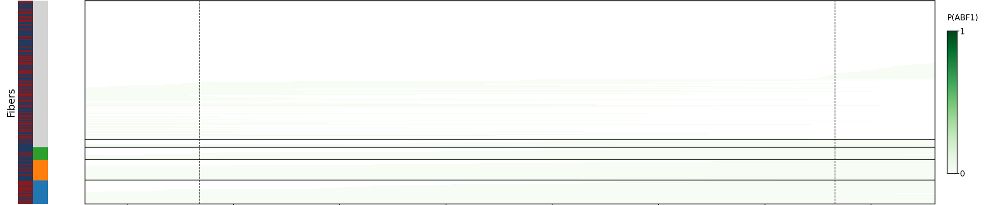
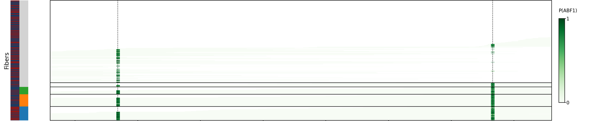
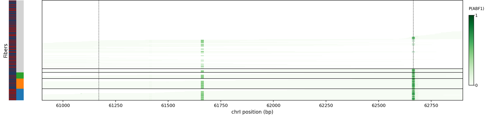
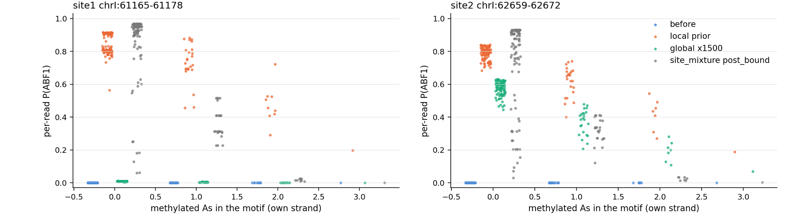

Part 1 Background m6A
After read filters, all four Jun25 barcodes sit at 0.183–0.193 in linkers, against 0.114–0.117 for May07 and 0.143 for Mar20. The gap is the same in nucleosome cores and genome-wide (Jun25 / May07 = 1.62×, 1.64×, 1.68×), so it is the run, not one barcode.
Rate = methylated / (methylated + canonical) A calls, pooled per barcode. Calls as singlefiber/read_calls.py: ML/255 ≥ 0.8105 methylated, ≤ 0.1895 canonical (Watson on ref A, Crick on ref T). Linkers: computeLinkers, 15 bp each side of 147 bp Chereji ±1 nucleosomes. Cores: the 147 bp windows of the current nucleosome m6A fit (Brogaard top 2,000, nucbrogsym/m6a_fit.py). Genome-wide: every ref A/T, chrM excluded. Reads: the final keep list (filters on the next slide: rDNA excluded, one pooled MAD fence), 667,502 reads. Source: bg_investigation/nov03_final/rates_final.tsv.
Part 1 Which reads we keep
Applied top to bottom; each read counts at the first filter that removes it. Big number: % of mapped reads. Small: % of informative A calls. The outlier fence is now one pooled fence over all 7 barcodes, not one per run.
MAPQ = −10·log10(chance the placement is wrong). 20 means a 1% chance; 60 is the top. Low MAPQ usually means the read fits more than one place.
dorado's mean base quality per read, same scale. qs 10 ≈ 90% of bases right; 20 ≈ 99%. Low-qs reads also look more methylated (Spearman ρ −0.33 to −0.43, every barcode).
Adapters (~117 bp at the 5′ end) are soft-clipped by the aligner. Trimming and re-aligning 3,500 random reads moved only +10 / −6 across MAPQ 20.
| Filter | What it removes | Mar20 bc01 | May07 bc03–04 | Jun25 bc21–24 | All 7 barcodes |
|---|---|---|---|---|---|
| No m6A tags | Failed flag, or no MM/ML tags (0 calls). | 0.0% – | 0.0% – | 0.0% – | 0.0% 16 · – |
| chrM | Mitochondrial: we model the nuclear genome. | 7.3% 4.6% | 21.5% 17.3% | 4.2% 3.1% | 11.3% 134,952 · 8.7% |
| rDNA array | Overlaps chrXII:451,418–468,929 (next slide). | 17.0% 14.2% | 16.9% 13.9% | 16.4% 13.8% | 16.7% 198,844 · 13.9% |
| MAPQ < 20 | ≥ 1% chance the read is in the wrong place. | 4.5% 2.4% | 2.3% 1.4% | 2.9% 1.6% | 3.0% 35,937 · 1.6% |
| Aligned < 500 bp | Under 500 bp of genome: ~3 nucleosomes. | 20.0% 4.4% | 7.6% 1.0% | 8.8% 1.0% | 10.6% 125,678 · 1.4% |
| Mean Q < 10 | Base calls under ~90% accurate on average. | 1.3% 1.6% | 1.4% 1.6% | 1.6% 1.6% | 1.5% 17,473 · 1.6% |
| m6A outlier | Outside the pooled fence [-0.070, 0.194]; all 9,270 are high. | 0.4% 0.3% | 0.6% 0.3% | 1.1% 0.4% | 0.8% 9,270 · 0.4% |
| Kept | 667,502 of 1,189,672 mapped reads | 49.5% 117,581 · 72.6% calls | 49.6% 222,212 · 64.6% calls | 65.0% 327,709 · 78.5% calls | 56.1% 667,502 · 72.5% calls |
Fence: reads with ≥ 50 informative A calls are judged on their genome-wide m6A rate; fence = median ± 4 × 1.4826 × MAD (median 0.0618, MAD 0.0223, 676,737 reads judged; 35 reads with < 50 calls kept unjudged). Source: filtered_refit_nordna/filter_summary.tsv, fence.json, scripts/make_keep.py.
Part 1 Which reads we keep
About 150 rDNA copies in the cell map onto 2 copies in the reference. Their reads pile up, cannot be placed, and look more methylated, so they bent the outlier fence. Dropping them barely moves the fitted rates.
chrXII:451,418–468,929: two copies of a 9,137 bp unit in sacCer3 (the second is 8,375 bp, cut short).
198,847 of 1,189,672 mapped reads (16.7%) touch it. Depth 990× vs 52.5× for the rest of the genome (723× vs 51.6× after filters).
68% of rDNA reads have MAPQ < 20, vs 4% elsewhere (131,546 at MAPQ 0, 58,230 at 60). 98.4% of the 63,707 MAPQ ≥ 20 reads touch the 762 bp stretch that exists in only one reference copy: high MAPQ means “unique in the reference”, not “unique in the cell”.
Pooled m6A 0.107 vs 0.065. Median per read 0.099 vs 0.061, higher in every barcode (right).
Median per-read m6A rate, kept reads
Part 1 Detail · does the read set matter?
Each cell: linker · nucleosome core · genome-wide. Filters lower the genome-wide rate a little and barely move linkers; the Jun25 lead is unchanged under every read set.
Pooled rate
| Read set | Mar20 bc01 | May07 bc03 | May07 bc04 | Jun25 bc21 | Jun25 bc22 | Jun25 bc23 | Jun25 bc24 | ALL |
|---|---|---|---|---|---|---|---|---|
| Unfiltered | .141 · .041 · .065 | .117 · .035 · .056 | .113 · .033 · .054 | .192 · .058 · .088 | .181 · .054 · .082 | .182 · .054 · .083 | .185 · .055 · .084 | .155 · .046 · .072 |
| Filters, no fence | .143 · .040 · .062 | .118 · .035 · .052 | .114 · .033 · .050 | .194 · .058 · .086 | .184 · .054 · .080 | .184 · .055 · .081 | .187 · .055 · .082 | .158 · .046 · .069 |
| Tukey per run | .141 · .039 · .058 | .115 · .033 · .047 | .112 · .031 · .046 | .192 · .057 · .082 | .182 · .053 · .077 | .183 · .053 · .077 | .186 · .054 · .079 | .156 · .045 · .065 |
| MAD per run | .142 · .040 · .060 | .116 · .033 · .048 | .113 · .032 · .047 | .193 · .057 · .083 | .183 · .053 · .078 | .184 · .054 · .079 | .187 · .055 · .080 | .157 · .045 · .067 |
| Final (no rDNA, pooled MAD) | .143 · .040 · .058 | .117 · .034 · .047 | .114 · .033 · .045 | .193 · .057 · .081 | .183 · .053 · .076 | .184 · .054 · .076 | .187 · .054 · .077 | .157 · .046 · .065 |
Median per-read rate (reads with ≥ 20 linker, ≥ 20 core, ≥ 200 genome-wide calls)
| Read set | Mar20 bc01 | May07 bc03 | May07 bc04 | Jun25 bc21 | Jun25 bc22 | Jun25 bc23 | Jun25 bc24 | ALL |
|---|---|---|---|---|---|---|---|---|
| Unfiltered | .121 · .028 · .058 | .103 · .024 · .047 | .100 · .023 · .045 | .182 · .047 · .082 | .172 · .043 · .077 | .171 · .043 · .078 | .174 · .044 · .079 | .140 · .034 · .065 |
| Tukey per run | .123 · .028 · .056 | .102 · .023 · .044 | .100 · .023 · .043 | .182 · .047 · .080 | .173 · .043 · .075 | .172 · .043 · .076 | .175 · .044 · .077 | .143 · .034 · .062 |
| Final (no rDNA, pooled MAD) | .125 · .028 · .055 | .103 · .024 · .043 | .100 · .023 · .042 | .182 · .048 · .079 | .174 · .043 · .074 | .173 · .043 · .075 | .175 · .044 · .076 | .143 · .034 · .061 |
Nucleosome core on Chereji ±1 sites instead (dyad −73 to +73, the original generator's window)
| Read set | Mar20 bc01 | May07 bc03 | May07 bc04 | Jun25 bc21 | Jun25 bc22 | Jun25 bc23 | Jun25 bc24 | ALL |
|---|---|---|---|---|---|---|---|---|
| Unfiltered | .052 | .047 | .045 | .073 | .068 | .069 | .070 | .059 |
| Tukey per run | .050 | .043 | .043 | .072 | .067 | .068 | .069 | .058 |
| Final (no rDNA, pooled MAD) | .051 | .045 | .045 | .073 | .068 | .068 | .070 | .059 |
MAD rule: outside median ± 4 × 1.4826 × MAD of the genome-wide per-read rate (per run here; one pooled fence in the final set, which also drops rDNA). Sources: bg_investigation/nov03/rates_by_barcode.tsv, final row bg_investigation/nov03_final/rates_final.tsv.
Part 2 Single-fiber model decisions
All rows, with values, evidence paths and dates: shared sheet FiberCOP model choices · https://claude.ai/artifact/8KkLfcKovncXqmNwFZh5TT
Part 3 Single-fiber update
0.81 = modkit's 10th-percentile-of-confidence rule, fixed once on the filtered reads (0.8105469).
Part 3 one A on one read · open (θ = 0.156) vs nucleosome dyad (θ = 0.019)
| Unmethylated A p ≤ 0.19 | Methylated A p ≥ 0.81 | No-call A 0.19 < p < 0.81 | C, G or T base cannot carry m6A on this strand | |
|---|---|---|---|---|
| Today: Bernoulli on confident calls only | ||||
| score if open | 0.8441 − θopen | 0.156θopen | 1.0001 (skipped) | 1.0001 (not scored) |
| score if nucleosome | 0.9811 − θnuc | 0.019θnuc | 1.0001 (skipped) | 1.0001 (not scored) |
| evidence | 1.16× nucleosome | 8.10× open | 1× — no evidence | 1× — no evidence |
| P(open) after this base if open and nucleosome start equal (50:50) | 0.4620.844 / (0.844 + 0.981) | 0.8900.156 / (0.156 + 0.019) | 0.5001.000 / (1.000 + 1.000) | 0.5001.000 / (1.000 + 1.000) |
| layer | what | at a no-call A |
|---|---|---|
| 0 | sequence (PWM for TFs, dinucleotide model for nucleosome, base frequencies for background) | used as normal |
| 1–4 | MNase | off (0) |
| 5 | Watson m6A Bernoulli | 0: the no-call is in neither the methylated nor the unmethylated mask |
| 6 | Crick m6A Bernoulli | 0: a read fills only its own strand's layer |
score of state s at a no-call base i
log es(i) = log seqs(basei) + 0
same as a C, G or T base; the state at i still comes from the neighbouring bases through forward–backward
Part 3 ERV46 · chrI:60,001–65,000 · 387 reads
Per-read P(ABF1) stays near 0.001 (max 0.0011).



Part 3 ERV46 · ABF1 prior × 1, 138, 400, 1500, 5000

Part 3 ERV46 · chrI:60,901–62,900 · same reads, same order
Local prior: both sites called. Global ×1500: site 2 only.



Part 3 Next
Part 3 Next
Part 3 Local prior · per read
The local prior over-calls site 1: 94% of reads above 0.5, against a bound fraction f = 0.72.

Part 2 Single-fiber model decisions
All rows, with values, evidence paths and dates: shared sheet FiberCOP model choices · https://claude.ai/artifact/8KkLfcKovncXqmNwFZh5TT